ລະບົບນີ້ແມ່ນຫຍັງ?
ສິດທີ່ມີໃນລະບົບ
ການເຂົ້າສູ່ລະບົບ
ວົງຈອນປະຈຳວັນ
ການເຂົ້າວຽກ
ບັນທຶກສະຕັອກ
ສ້າງຕູ້ໃໝ່
ຍ້າຍສິນຄ້າລະຫວ່າງຕູ້
ປັບສະຕັອກ ແລະ ແກ້ໄຂ
ຕັ້ງຄ່າ SKU
ຕັ້ງຄ່າຜູ້ໃຊ້
ອ່ານລາຍງານ
ເອກະສານ ແລະ ສັ່ງຊື້
ວຽກປະຈຳ
ແກ້ບັນຫາ
💎 ລະບົບນີ້ແມ່ນຫຍັງ?
KPV ສະຕັອກ ແມ່ນລະບົບບັນທຶກ ແລະ ກວດນັບສະຕັອກທອງປະຈຳວັນ ຂອງແຕ່ລະຕູ້ ໃນທຸກສາຂາ. ໃຊ້ແທນການຈົດໃສ່ປຶ້ມ ຫຼື Excel. ເປີດໃຊ້ໄດ້ທັງໃນໂທລະສັບ ແລະ ແທັບເລັດ ຜ່ານ browser, ບໍ່ຕ້ອງຕິດຕັ້ງແອັບ.
ບັນທຶກ ແລະ ກວດນັບທຸກມື້ — ຍອດເປີດ, ສິນຄ້າເຂົ້າ, ຂາຍ, ຕັດສະຕັອກ, ຍ້າຍ ເຂົ້າ/ອອກ ແລະ ຍອດປິດ ຂອງແຕ່ລະຕູ້ແຈ້ງເຕືອນສະຕັອກຕ່ຳ — ລະບົບຄິດວ່າສະຕັອກພໍຂາຍອີກຈັກມື້ ແລະ ເນັ້ນສີລາຍການທີ່ຕ້ອງສັ່ງເອກະສານ ແລະ ຂໍ້ສະເໜີສັ່ງຊື້ — ພິມ ຫຼື ບັນທຶກເປັນ PDFພາບລວມ ແລະ ລາຍງານ — ມູນຄ່າສະຕັອກ, ການເຄື່ອນໄຫວ ແລະ ຜົນການກວດນັບ ທຸກມື້
ສາຂາໃນລະບົບ ຕະຫລາດເຊົ້າ · ວຽງຈັນເຊັນເຕີ (B-VTC) · ໄອເຕັກ · ວັງທອງ ຕູ້ (Case) ແຕ່ລະສາຂາມີຫຼາຍຕູ້. ສະຕັອກຖືກນັບແຍກ ຕາມຕູ້ ຫົວໜ່ວຍ ບາດ (Baht), ສະຫຼຶງ, ກລາມ ແລະ ຈຳນວນອັນ (pcs) ພາສາ ລາວ ແລະ English — ປ່ຽນໄດ້ທີ່ ຕັ້ງຄ່າ → ຕັ້ງຄ່າພາສາ
ຫຼັກການສຳຄັນ: ຍອດປິດຂອງທຸກຕູ້ ຕ້ອງກົງກັບຂອງຈິງ ທຸກມື້. ທຸກຕົວເລກໃນ ພາບລວມ ແລະ ລາຍງານ ມາຈາກສິ່ງທີ່ພະນັກງານບັນທຶກໃນໜ້າ ສະຕັອກ. ບັນທຶກຜິດ = ລາຍງານຜິດ.
* ຮູບໜ້າຈໍໃນຄູ່ມືນີ້ ຖ່າຍຈາກການທົດສອບລະບົບ ວັນທີ 17–18/11/2026 ດ້ວຍຂໍ້ມູນຕົວຢ່າງ: ສາຂາ ວັງທອງ, ຕູ້ TEST ຕູ້ A ແລະ TEST ຕູ້ B , SKU TEST ສິນຄ້າຄູ່ມື , ຜູ້ໃຊ້ TEST ພະນັກງານຄູ່ມື . ຕົວເລກບໍ່ແມ່ນຂໍ້ມູນຈິງ. ກົດຮູບເພື່ອຂະຫຍາຍ.
👤 ສິດທີ່ມີໃນລະບົບ
SKU ໃຊ້ຮ່ວມກັນທັງບໍລິສັດ (ລະຫັດ, ຊື່, ປະເພດ, ຂະໜາດ). ແຕ່ ຂາຍສະເລ່ຍ/ມື້ , ໄລຍະສັ່ງ ແລະ ສາຂານີ້ມີຂາຍ ແມ່ນຂອງແຕ່ລະສາຂາ.
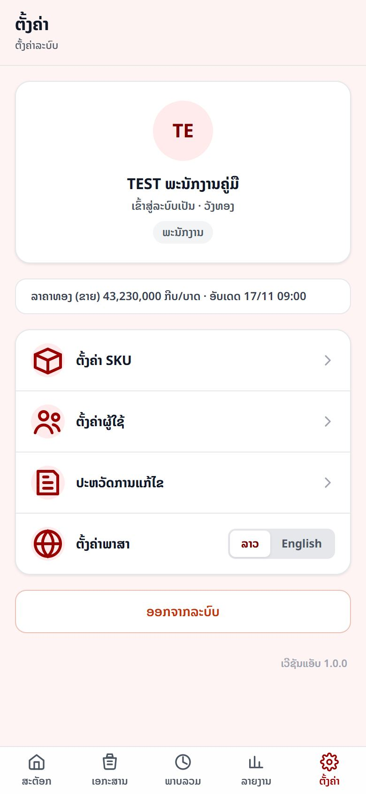
ຕັ້ງຄ່າ — ຊື່ຜູ້ໃຊ້, ລະດັບ, ລາຄາທອງ ແລະ ເມນູຍ່ອຍ
🔐 ການເຂົ້າສູ່ລະບົບ
ໃສ່ ຊື່ຜູ້ໃຊ້ (ເຊັ່ນ test.guide ) — ແອດມິນເປັນຄົນສ້າງໃຫ້
ໃສ່ ລະຫັດຜ່ານ (ຢ່າງໜ້ອຍ 6 ຕົວ). ກົດຮູບຕາ ເພື່ອເບິ່ງສິ່ງທີ່ພິມ
ກົດ ເຂົ້າສູ່ລະບົບ → ລະບົບເປີດໜ້າ ສະຕັອກປະຈຳວັນ ຂອງສາຂາທ່ານ
ແທັບເລັດໃຊ້ຮ່ວມກັນ: ລະບົບຈື່ການເຂົ້າສູ່ລະບົບ ປະມານ 30 ມື້. ເມື່ອປ່ຽນຄົນໃຊ້ ໃຫ້ກົດ
ຕັ້ງຄ່າ → ອອກຈາກລະບົບ ທຸກຄັ້ງ — ບໍ່ດັ່ງນັ້ນ ທຸກການບັນທຶກຈະຂຶ້ນຊື່ຄົນເກົ່າ.
ລືມລະຫັດຜ່ານ? ໃຫ້ແອດມິນຕັ້ງໃໝ່ໃຫ້. ໃສ່ຜິດຫຼາຍຄັ້ງ ບັນຊີຈະຖືກລັອກຊົ່ວຄາວ — ຜູ້ຈັດການສາຂາ ຫຼື ແອດມິນ ປົດລັອກໄດ້.
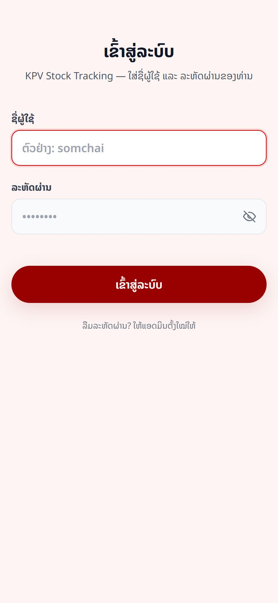
① ໜ້າເຂົ້າສູ່ລະບົບ 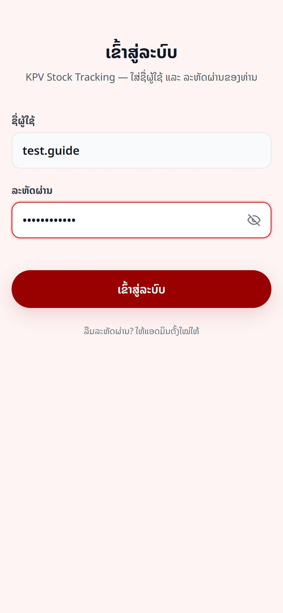
② ໃສ່ ຊື່ຜູ້ໃຊ້ ແລະ ລະຫັດຜ່ານ 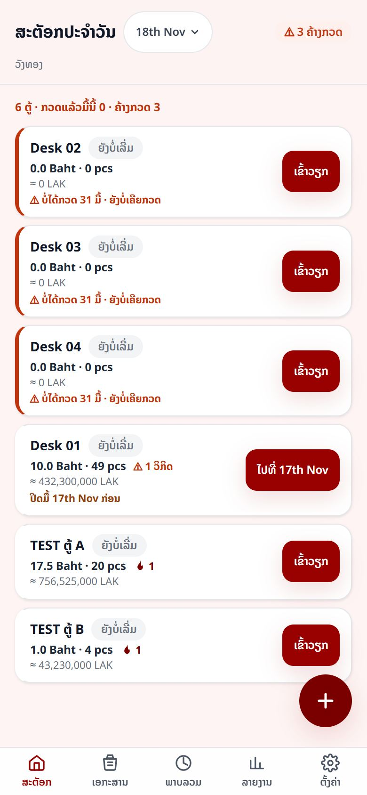
③ ເຂົ້າແລ້ວ — ໜ້າ ສະຕັອກປະຈຳວັນ
🔄 ວົງຈອນປະຈຳວັນ ຂອງແຕ່ລະຕູ້
ທຸກຕູ້ ທຸກມື້ ຜ່ານສະຖານະຕາມລຳດັບນີ້ (ເບິ່ງໄດ້ທີ່ປ້າຍໃນບັດຕູ້):
1 ຍັງບໍ່ເລີ່ມ ຕູ້ຍັງບໍ່ເປີດມື້ນີ້ → ກົດ ເຂົ້າວຽກ
→
2 ເຂົ້າວຽກ ຍອດເປີດ = ຍອດປິດມື້ວານ. ພິມ ເຂົ້າ / ຂາຍ / ຕັດ / ຍ້າຍ ລະຫວ່າງມື້ (ໜ້າຕູ້ສະແດງ ເປີດຢູ່ )
→
3 ເລີ່ມນັບ ນັບຂອງຈິງ ໃສ່ຖັນ ນັບ ; ຖ້າບໍ່ກົງ ໃສ່ໝາຍເຫດ
→
4 ✓ ແລ້ວ ກົດ ✓ ປິດມື້ — ມື້ນັ້ນຖືກລັອກ
ຍອດປິດ = ຍອດເປີດ + ເຂົ້າ − ຂາຍຍ່ອຍ − ຂາຍສົ່ງ − ຕັດສະຕັອກ ± ຍ້າຍ ເຂົ້າ/ອອກ
ລະບົບຄິດ ຍອດປິດ ໃຫ້ເອງ ແລະ ຍອດປິດມື້ນີ້ ຈະເປັນ ຍອດເປີດ ຂອງມື້ຕໍ່ໄປ. ບໍ່ສາມາດເຂົ້າວຽກມື້ໃໝ່ໄດ້ ຖ້າມື້ກ່ອນຂອງຕູ້ນັ້ນຍັງບໍ່ ✓ ແລ້ວ (ບັດຂຶ້ນ ຄ້າງກວດ ).
ໃນໂທລະສັບ ຕາຕະລາງເລື່ອນໄປຊ້າຍ-ຂວາໄດ້; ຊື່ສິນຄ້າຄ້າງຢູ່ຊ້າຍສະເໝີ. ທຸກໜ້າມີລິ້ງຂອງຕົນເອງ (ເຊັ່ນ /daily_stock ) — ໂຫຼດໃໝ່ ຈະຢູ່ໜ້າເດີມ.
🌅 ການເຂົ້າວຽກ (ຕອນເຊົ້າ)
ເປີດເມນູ ສະຕັອກ . ກວດ ວັນທີ ດ້ານເທິງ ແລະ ສາຂາ
ບັດຕູ້ທີ່ ຍັງບໍ່ເລີ່ມ ມີປຸ່ມ ເຂົ້າວຽກ — ກົດທຸກຕູ້ທີ່ຮັບຜິດຊອບ
ກົດ ກວດສະຕັອກ ເພື່ອເປີດໜ້າຕູ້. ຖັນ ຍອດເປີດ ຕ້ອງເທົ່າກັບຍອດປິດມື້ວານ
ທຽບ ຍອດເປີດ ກັບຂອງຈິງໃນຕູ້. ຖ້າບໍ່ກົງ ແຈ້ງຫົວໜ້າທັນທີ
ຕົວຢ່າງຈາກການທົດສອບ: ມື້ 17/11 TEST ຕູ້ A ປິດ TEST ສິນຄ້າຄູ່ມື
10 ອັນ. ມື້ 18/11 ກົດເຂົ້າວຽກ → ຍອດເປີດ
10 ອັນ ອັດຕະໂນມັດ.
ກ່ອນເຂົ້າວຽກ ບັດຕູ້ສະແດງ 0.0 Baht · 0 pcs — ແມ່ນປົກກະຕິ, ຕົວເລກຈະຂຶ້ນຫຼັງກົດ ເຂົ້າວຽກ.
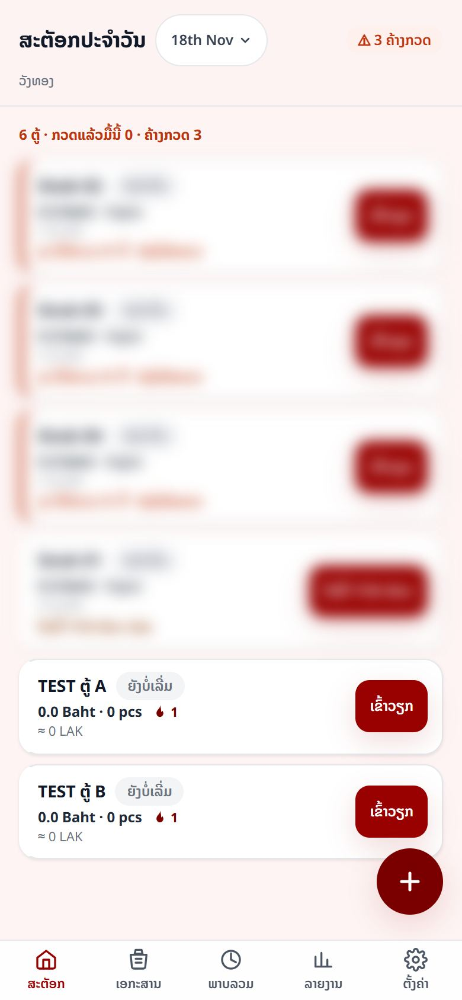
ບັດຕູ້ ຍັງບໍ່ເລີ່ມ — ກົດ ເຂົ້າວຽກ 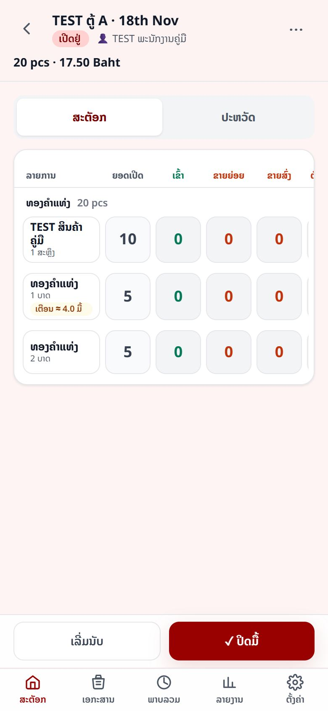
ຫຼັງເຂົ້າວຽກ — ຍອດເປີດ = ຍອດປິດມື້ວານ
📝 ບັນທຶກສະຕັອກ ລະຫວ່າງມື້
ແຕະຊ່ອງໃດ ແປ້ນຕົວເລກຈະຂຶ້ນ — ພິມເລກ ແລ້ວກົດ ຕໍ່ໄປ . ລະບົບບັນທຶກເອງທັນທີ (ມຸມຂວາເທິງຂຶ້ນ ບັນທຶກແລ້ວ )
ບັນທຶກ ທັນທີທີ່ເກີດ — ຮັບສິນຄ້າ ໃສ່ ເຂົ້າ, ຂາຍ ໃສ່ ຂາຍຍ່ອຍ / ຂາຍສົ່ງ
ລຸ່ມຊື່ສິນຄ້າ ອາດມີປ້າຍ ເຕືອນ ≈ 4.0 ມື້ ຫຼື ວິກິດ = ສະຕັອກຂອງສາຂາພໍຂາຍອີກປະມານຈັກມື້
ເມນູ ⋯ ມຸມຂວາເທິງ: + ເພີ່ມ SKU ໃສ່ຕູ້, ເອົາລາຍການອອກ, ບັນທຶກນຳເງິນເຂົ້າຕູ້ເຊຟ
ຕົວຢ່າງ: TEST ຕູ້ A ມື້ 18/11 — ເຂົ້າ 3 , ຂາຍຍ່ອຍ 2 , ຂາຍສົ່ງ 1 .
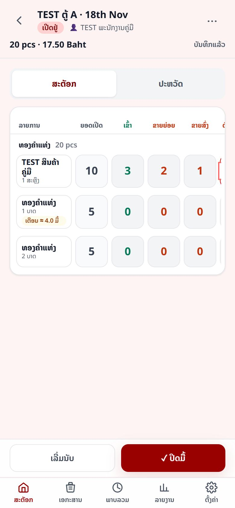
ໃສ່ ເຂົ້າ 3 · ຂາຍຍ່ອຍ 2 · ຂາຍສົ່ງ 1 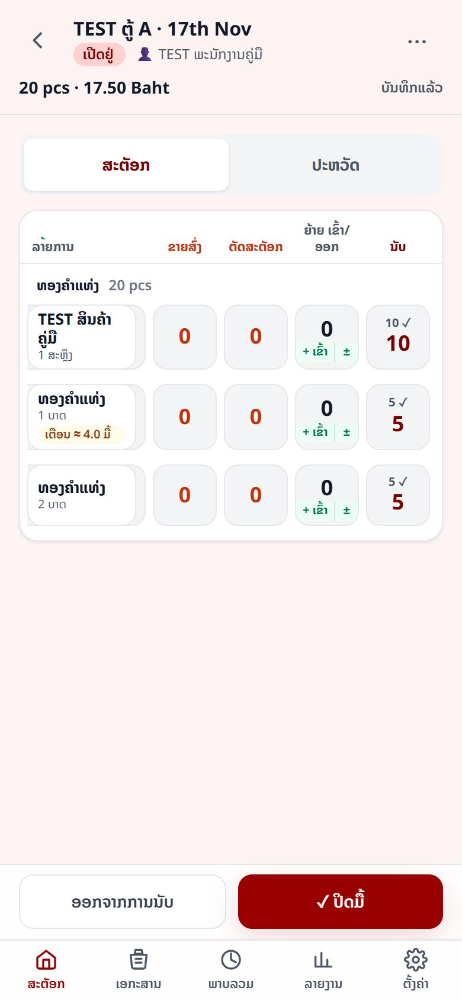
ໂໝດນັບ — ແຕະ "10 ✓" ຖ້ານັບໄດ້ເທົ່າຍອດປິດ
🗄 ສ້າງຕູ້ໃໝ່
ໜ້າ ສະຕັອກ → ປຸ່ມ + ມຸມຂວາລຸ່ມ
ໃສ່ ຊື່/ເລກທີ່ຕູ້ (ເຊັ່ນ TEST ຕູ້ A)
ກົດ + ເພີ່ມ SKU → ເລືອກສິນຄ້າ (ຄົ້ນຫາໄດ້) → ກົດເພີ່ມ
ໃສ່ ຍອດເປີດ ຂອງແຕ່ລະ SKU ແລ້ວກົດ ສ້າງຕູ້
ຕູ້ໃໝ່ ເຂົ້າວຽກໃຫ້ອັດຕະໂນມັດ ໃນມື້ທີ່ສ້າງ — ບັນທຶກ ແລະ ປິດມື້ໄດ້ທັນທີ. ສະເພາະມື້ທຳອິດ ສາມາດໃສ່ຍອດເປີດຂອງ SKU ທີ່ເພີ່ມພາຍຫຼັງໄດ້.
ຕົວຢ່າງ: TEST ຕູ້ A = TEST ສິນຄ້າຄູ່ມື 10 + ທອງຄຳແທ່ງ 1 ບາດ 5 + ທອງຄຳແທ່ງ 2 ບາດ 5 (3 SKU · 20 ອັນ). TEST ຕູ້ B = TEST ສິນຄ້າຄູ່ມື 4.
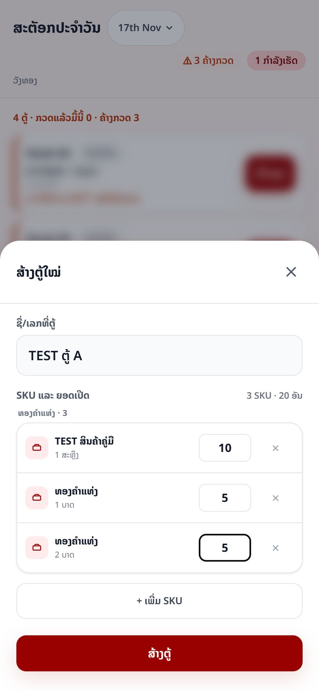
ຟອມ ສ້າງຕູ້ໃໝ່ — SKU ແລະ ຍອດເປີດ 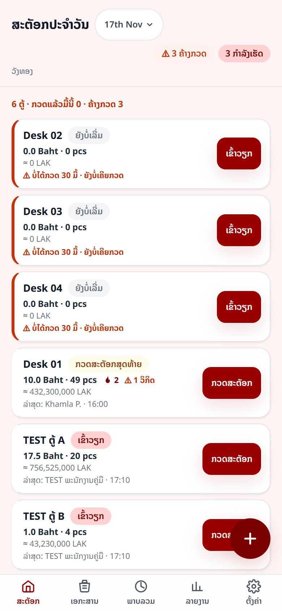
ຕູ້ໃໝ່ຂຶ້ນໃນລາຍການ ສະຖານະ ເຂົ້າວຽກ
🔁 ຍ້າຍສິນຄ້າລະຫວ່າງຕູ້
ໃຊ້ຖັນ ຍ້າຍ ເຂົ້າ/ອອກ ທັງສອງຕູ້ — ບໍ່ຕ້ອງໃສ່ໃນຊ່ອງ ເຂົ້າ:
1 ຕູ້ທີ່ສົ່ງ ພິມ −2 (ຫຼື ພິມ 2 ແລ້ວກົດ ± ) → ແຖບລຸ່ມຂຶ້ນ − ອອກ ສີແດງ
→
2 ຕູ້ທີ່ຮັບ ພິມ 2 → ແຖບລຸ່ມຂຶ້ນ + ເຂົ້າ ສີຂຽວ
→
3 ກວດ ການຍ້າຍທັງໝົດຂອງມື້ ຕ້ອງບວກລົບກັນເທົ່າ 0. ຖ້າບໍ່ເທົ່າ, ໜ້າ ພາບລວມ ຈະເຕືອນ
ທັງສອງຝ່າຍຕ້ອງໃສ່. ລະບົບບໍ່ໃສ່ໃຫ້ອີກຕູ້ອັດຕະໂນມັດ — ສົ່ງ −2 ແຕ່ຕູ້ຮັບບໍ່ໃສ່ +2 ສະຕັອກຈະຫາຍ 2 ອັນ.
TEST ຕູ້ A ສົ່ງອອກ −2 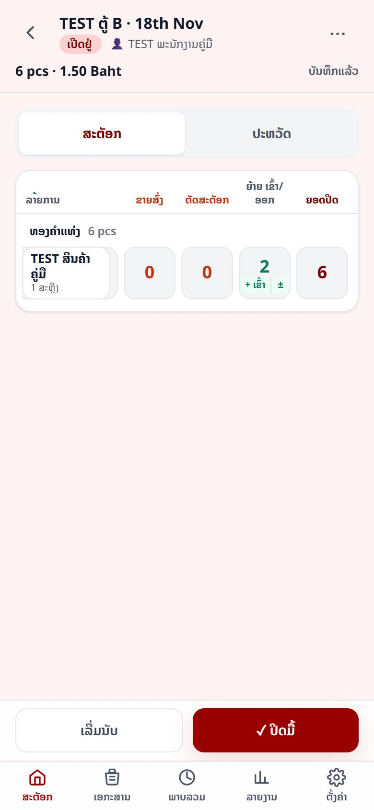
TEST ຕູ້ B ຮັບເຂົ້າ +2
⚖️ ປັບສະຕັອກ ແລະ ແກ້ໄຂ
1. ຕັດສະຕັອກ (ເສຍ / ເພ / ໃຊ້ພາຍໃນ)
ໃສ່ຈຳນວນໃນຖັນ ຕັດສະຕັອກ → ລຸ່ມແຖວຂຶ້ນ ໃສ່ເຫດຜົນ ສີແດງ → ກົດ ແລ້ວພິມເຫດຜົນ → ບັນທຶກ . ບໍ່ມີເຫດຜົນ ປິດມື້ບໍ່ໄດ້.
2. ນັບບໍ່ກົງ (ຕ່າງ)
ກົດ ເລີ່ມນັບ . ຖັນສຸດທ້າຍກາຍເປັນ ນັບ — ຕົວເລກນ້ອຍດ້ານເທິງແມ່ນຍອດປິດທີ່ລະບົບຄາດໄວ້. ນັບໄດ້ເທົ່າກັນ ແຕະ "7 ✓"; ບໍ່ເທົ່າ ພິມຈຳນວນທີ່ນັບໄດ້. ລຸ່ມແຖວຂຶ້ນ ຕ່າງ −1 → ກົດ ໃສ່ໝາຍເຫດ ອະທິບາຍ. ໃນລາຍງານ ສ່ວນຕ່າງນີ້ສະແດງເປັນ ປັບຕາມການນັບຈິງ .
ຕົວຢ່າງ: TEST ຕູ້ A: 10 + 3 − 2 − 1 − 1 (ຕັດ) − 2 (ຍ້າຍ) = ຍອດປິດ 7 . ນັບໄດ້ 6 → ຕ່າງ −1 , ໝາຍເຫດ "TEST ນັບຂາດ 1".
3. ປິດມື້
ກວດທຸກແຖວ ແລ້ວກົດ ✓ ປິດມື້ . ຖ້າຍັງຂາດ ນັບ, ໝາຍເຫດ ຫຼື ເຫດຜົນ ລະບົບຈະເນັ້ນແຖວນັ້ນສີແດງ. ກ່ອນ 15:30 ລະບົບຖາມຢືນຢັນກ່ອນ. ປິດແລ້ວ ໜ້າຕູ້ຂຶ້ນ ປິດແລ້ວ … ໂດຍ … ແລະ ແກ້ໄຂບໍ່ໄດ້.
4. ເປີດມື້ນີ້ຄືນ (ຜູ້ຈັດການ / ແອດມິນ)
ຖ້າປິດມື້ແລ້ວ ແຕ່ພົບວ່າຜິດ: ຜູ້ຈັດການ ຫຼື ແອດມິນ ເປີດໜ້າຕູ້ → ເປີດມື້ນີ້ຄືນ → ໃສ່ ເຫດຜົນ (ບັງຄັບ) . ແກ້ໄຂ ແລ້ວກົດ ✓ ປິດມື້ ອີກຄັ້ງ — ຍອດເປີດມື້ຕໍ່ໄປອັບເດດເອງ. ເປີດຄືນໄດ້ສະເພາະມື້ຫຼ້າສຸດ ທີ່ບໍ່ເກີນ 3 ມື້.
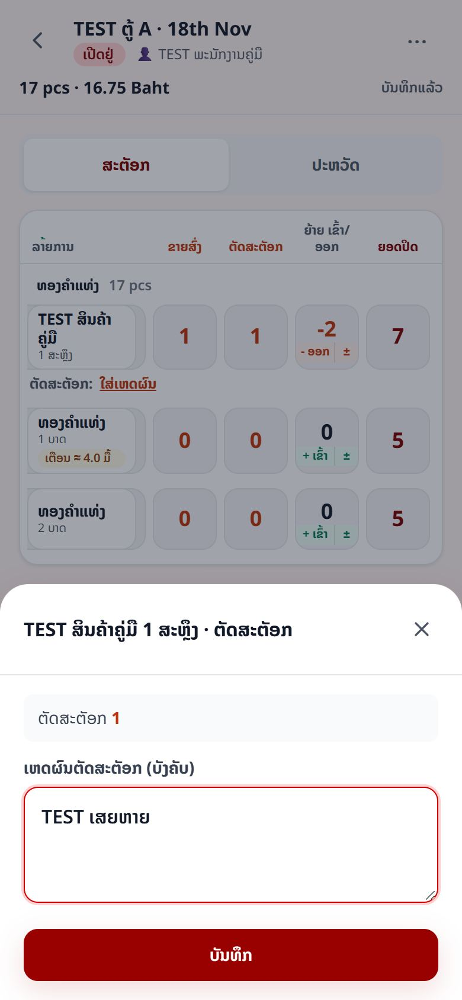
ຕັດສະຕັອກ 1 — ເຫດຜົນ (ບັງຄັບ) 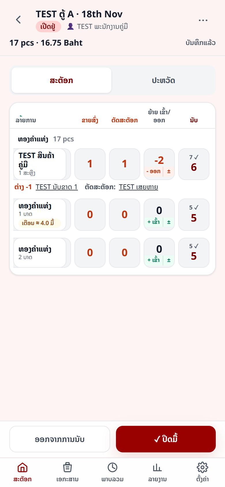
ນັບໄດ້ 6 ຈາກ 7 — ຕ່າງ −1 ພ້ອມໝາຍເຫດ 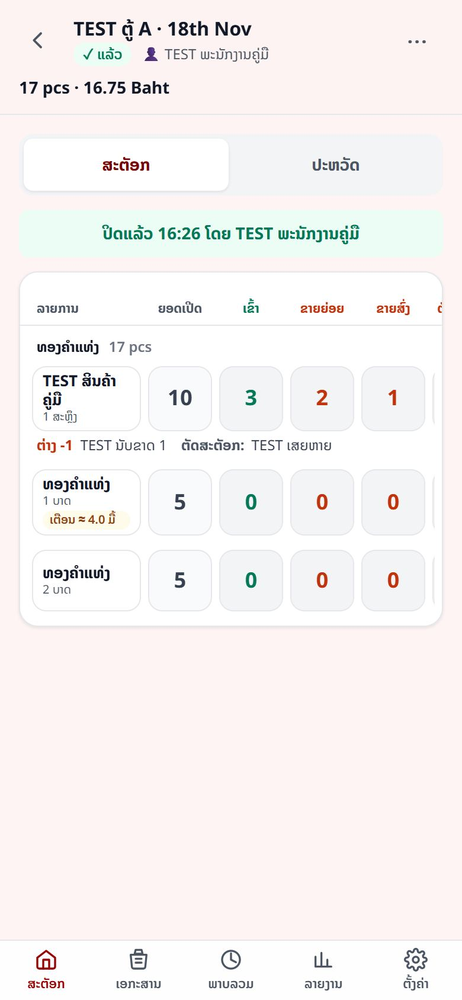
✓ ແລ້ວ — ລັອກ, ແກ້ໄຂບໍ່ໄດ້ 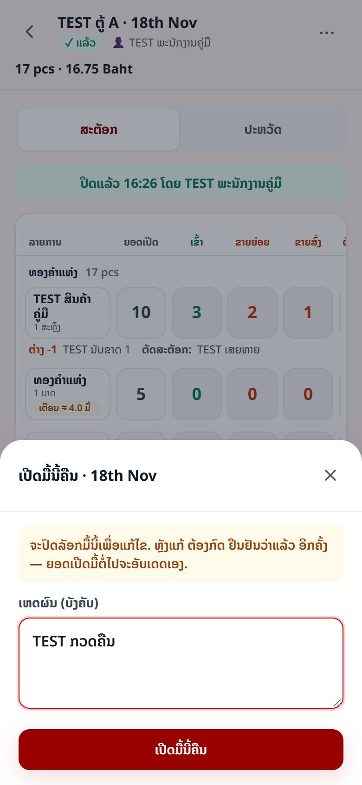
ເປີດມື້ນີ້ຄືນ — ຕ້ອງໃສ່ເຫດຜົນ
📦 ຕັ້ງຄ່າ SKU
ຕັ້ງຄ່າ → ຕັ້ງຄ່າ SKU . SKU ຖືກຈັດກຸ່ມຕາມ ປະເພດ (ກົດຫົວກຸ່ມເພື່ອເປີດ, ຫຼື ເປີດທັງໝົດ ). ແອດມິນເລືອກສາຂາໄດ້ຢູ່ກ່ອງທຳອິດ.
ເພີ່ມ SKU ໃໝ່ (ປຸ່ມ + ສີແດງ)
ຊື່ສິນຄ້າ — ຊື່ເທົ່ານັ້ນ (ເຊັ່ນ ຄຳແທ່ງ), ບໍ່ຕ້ອງໃສ່ນ້ຳໜັກ . ໜ້າອື່ນຈະສະແດງ ຊື່ + ຂະໜາດ ເຊັ່ນ "TEST ສິນຄ້າຄູ່ມື 1 ສະຫຼຶງ"ປະເພດ ແລະ ຂະໜາດ — ເລືອກຈາກລາຍການຂາຍສະເລ່ຍ/ມື້ (ອັນ) ແລະ ໄລຍະສັ່ງ (ມື້) — ຂອງສາຂານີ້. ວ່າງ = ໃຊ້ຄ່າຂອງປະເພດ; ຖ້າບໍ່ມີ ລະບົບຄິດ ຂາຍ/ມື້ ຈາກການຂາຍຈິງ ແລະ ໃຊ້ໄລຍະສັ່ງເລີ່ມຕົ້ນແອດມິນ: ໝາຍ ໃຊ້ກັບທຸກສາຂາ ເພື່ອໃຫ້ທຸກສາຂາມີຂາຍ; ບໍ່ໝາຍ = ສະເພາະສາຂາທີ່ເລືອກ
ປຸ່ມ ຕັ້ງຄ່າທັງໝົດ ຢູ່ຫົວປະເພດ ໃສ່ ຂາຍສະເລ່ຍ/ມື້ ແລະ ໄລຍະສັ່ງ ໃຫ້ທຸກ SKU ໃນປະເພດນັ້ນ. ສະວິດທ້າຍແຖວ = ສາຂານີ້ມີຂາຍ (ປິດບໍ່ໄດ້ ຖ້າຍັງມີສະຕັອກ). ປ່ຽນຊື່ / ປະເພດ / ຂະໜາດ, ປິດໃຊ້ງານ, ແຖບ ປະເພດ ແລະ ນ້ຳໜັກ ແອດມິນ .
ນຳເຂົ້າ / ສົ່ງອອກ Excel (ປຸ່ມ ⬆)
1 ດາວໂຫຼດ ດາວໂຫຼດລາຍການ (ພ້ອມຄ່າປັດຈຸບັນ) ຫຼື ດາວໂຫຼດແບບຟອມ
→
2 ແກ້ໄຂໃນ Excel ຖັນ * ຕ້ອງໃສ່. ລະຫັດວ່າງ = SKU ໃໝ່ . ຊ່ອງ ຂາຍ/ມື້ ຫຼື ໄລຍະສັ່ງ ວ່າງ = ບໍ່ປ່ຽນ; ໃສ່ - ເພື່ອລຶບຄ່າ
→
3 ເລືອກໄຟລ໌ ລະບົບສະແດງ ໃໝ່ / ປ່ຽນ / ບໍ່ປ່ຽນ ກ່ອນ. ມີແຖວຜິດ = ບໍ່ນຳເຂົ້າຫຍັງເລີຍ
→
4 ຢືນຢັນ ບັນທຶກ ແລະ ເກັບປະຫວັດ. ບໍ່ມີການລຶບ SKU
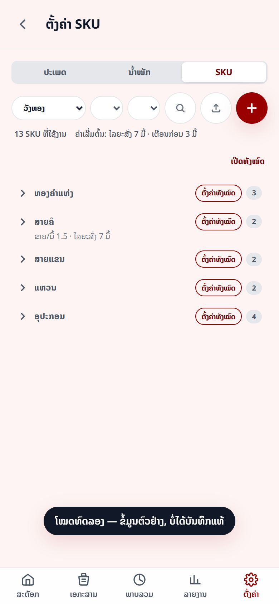
ລາຍການ SKU ຂອງສາຂາ ຕາມປະເພດ 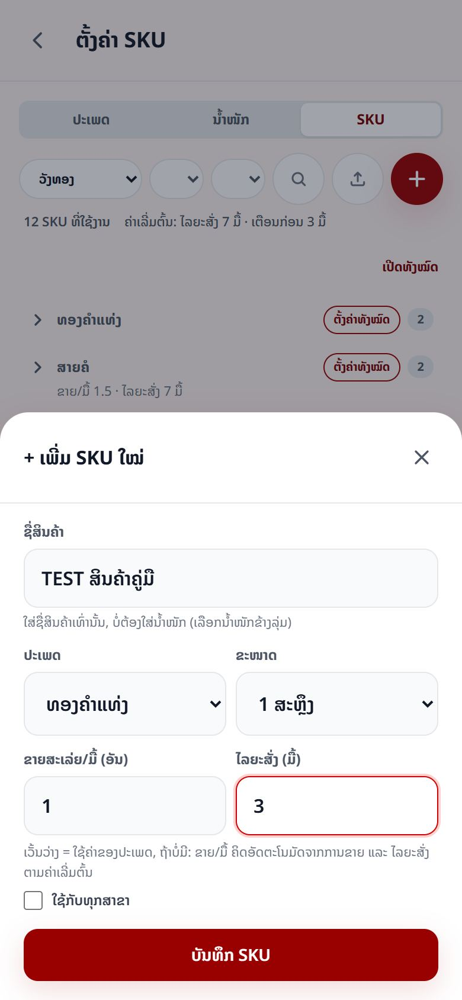
ເພີ່ມ SKU ໃໝ່ — ຊື່, ປະເພດ, ຂະໜາດ, ຂາຍ/ມື້, ໄລຍະສັ່ງ 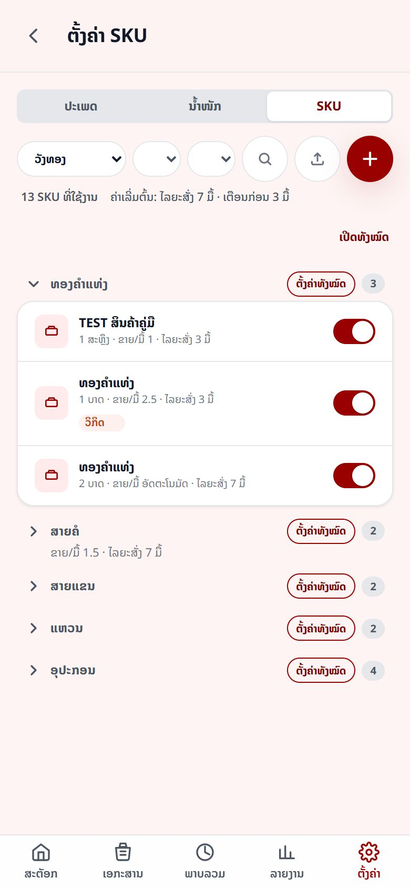
SKU ໃໝ່ ໃນກຸ່ມ ທອງຄຳແທ່ງ 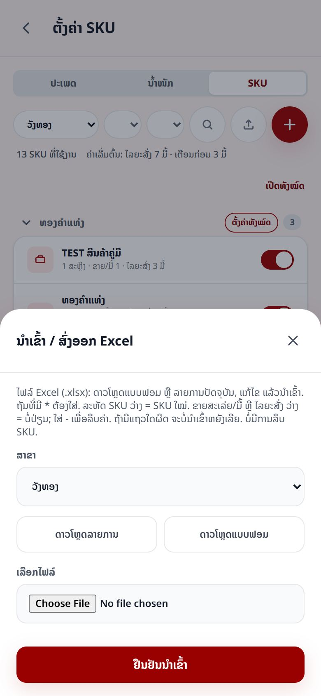
ນຳເຂົ້າ / ສົ່ງອອກ Excel
👥 ຕັ້ງຄ່າຜູ້ໃຊ້
ຕັ້ງຄ່າ → ຕັ້ງຄ່າຜູ້ໃຊ້ . ຫົວລາຍການບອກຈຳນວນ ແອດມິນ / ຜູ້ຈັດການສາຂາ / ພະນັກງານ.
ແອດມິນ ກົດ + ເພີ່ມຜູ້ໃຊ້ ໃສ່ ຊື່ , ຊື່ຜູ້ໃຊ້ (3–30 ຕົວ: a-z, 0-9, . _ - ບໍ່ມີຍະຫວ່າງ), ລະດັບ , ສາຂາ ແລະ ລະຫັດຜ່ານ (ຢ່າງໜ້ອຍ 6 ຕົວ)
ກົດ ບັນທຶກ → ບອກ ຊື່ຜູ້ໃຊ້ ແລະ ລະຫັດຜ່ານ ໃຫ້ພະນັກງານ
ກົດຊື່ຜູ້ໃຊ້ ເພື່ອແກ້ໄຂ, ຍ້າຍສາຂາ, ຕັ້ງລະຫັດໃໝ່, ປົດລັອກ ຫຼື ປິດການໃຊ້ງານ (ຄົນລາອອກ)
ແອດມິນ ເບິ່ງລະຫັດຜ່ານໄດ້ (ກົດຮູບຕາ). ຜູ້ຈັດການສາຂາ ປົດລັອກພະນັກງານໃນສາຂາຕົນໄດ້ເທົ່ານັ້ນ
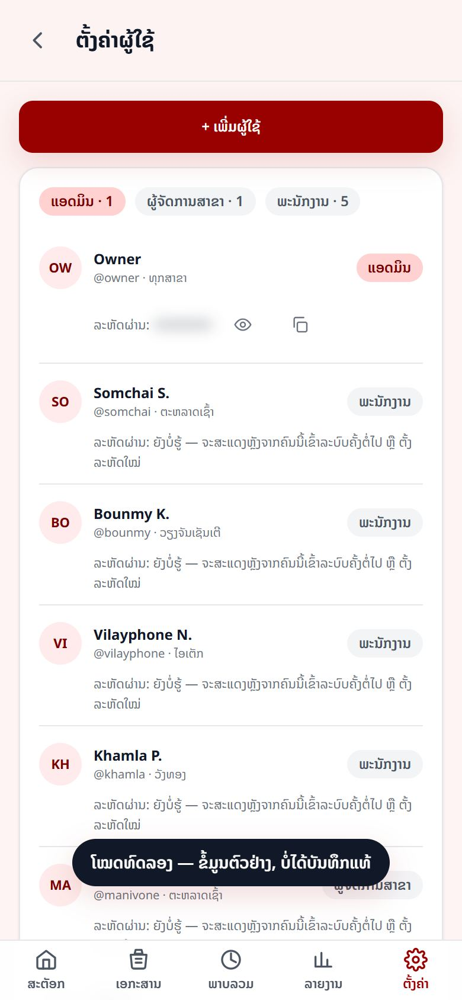
ລາຍຊື່ຜູ້ໃຊ້ 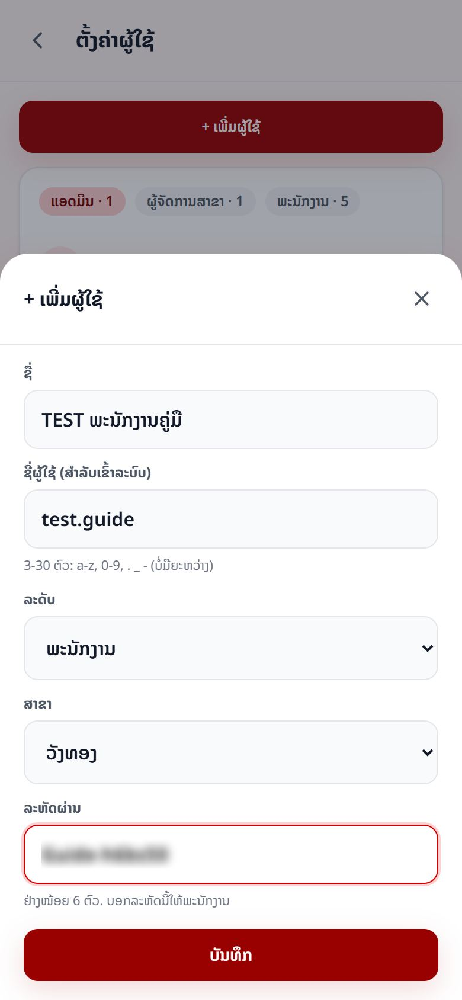
ເພີ່ມຜູ້ໃຊ້ (ລະຫັດຜ່ານຖືກປິດໄວ້ໃນຮູບ) 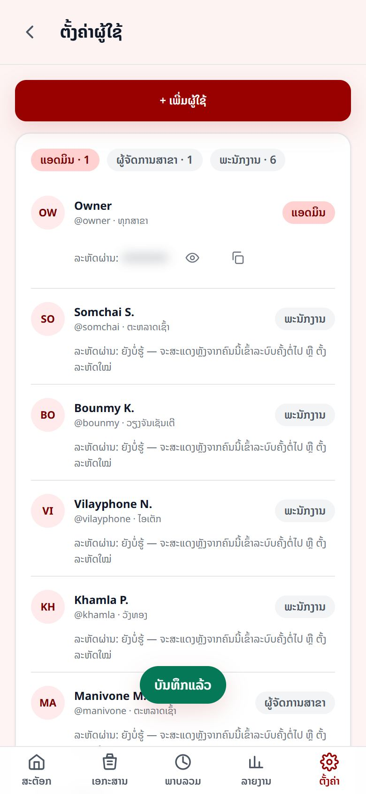
ບັນທຶກແລ້ວ — ພະນັກງານ 5 → 6
📊 ອ່ານລາຍງານ
1. ພາບລວມ
ກອງຕາມ ໄລຍະເວລາ, ສາຂາ, ຕູ້, ປະເພດ ແລະ ສະຖານະ. ອ່ານຈາກເທິງລົງລຸ່ມ:
2. ລາຍງານການເຄື່ອນໄຫວ
ເລືອກ ເດືອນ , ສາຂາ , ຕູ້ ຫຼື ຄົ້ນຫາສິນຄ້າ.
ຕາຕະລາງກວດແຕ່ລະວັນ — ແຖວ = ຕູ້, ຖັນ = ວັນທີ. ✓ ປົກກະຕິ · ຕົວເລກແດງ = ນັບບໍ່ກົງ (ບາດ) · ⚠ ຕ້ອງໂສ້ຂາດ/ເປີດຄືນ · · ຍັງບໍ່ກວດ4 ບັດ: ຍອດເປີດ · ຍອດປິດ · ສິນຄ້າເຂົ້າ · ສິນຄ້າອອກ (ມູນຄ່າ ແລະ pcs). ສິນຄ້າອອກ ລວມ ຂາຍ, ຕັດສະຕັອກ ແລະ ຍ້າຍອອກ
ປັບຕາມການນັບຈິງ — ຜົນລວມຂອງສ່ວນຕ່າງ ນັບ − ຍອດປິດລາຍລະອຽດແຕ່ລະລາຍການ — ເບິ່ງແບບ ບັດ ຫຼື ຕາຕະລາງ ; ປ້າຍ +/− = ປ່ຽນແປງໃນເດືອນ
ອ່ານຕົວຢ່າງ (TEST ຕູ້ A, ເດືອນ 11): ຍອດເປີດ 20 pcs → ສິນຄ້າເຂົ້າ +3 → ສິນຄ້າອອກ −6 (ຂາຍຍ່ອຍ 2 + ຂາຍສົ່ງ 1 + ຕັດ 1 + ຍ້າຍອອກ 2) → ປັບຕາມການນັບຈິງ −1 → ຍອດປິດ 16 pcs . ໃນຕາຕະລາງກວດ: 17 ✓, 18 −0.25 (ຂາດ 1 ສະຫຼຶງ = 0.25 ບາດ).
3. ປະຫວັດ
ແຖບ ປະຫວັດ ໃນໜ້າຕູ້ — ແຕ່ລະວັນ: ເປີດ / ເຂົ້າ / ອອກ / ປິດ / ນັບ (ບາດ), ພ້ອມທຸງ ນັບບໍ່ກົງ ແລະ ເປີດແກ້ໄຂຄືນ ຕັ້ງຄ່າ → ປະຫວັດການແກ້ໄຂ — ທຸກການປ່ຽນແປງ: ໃຜ, ເວລາ, ຕູ້, ຄ່າເກົ່າ → ຄ່າໃໝ່. ກອງຕາມ ຕູ້, ຜູ້ເຮັດ, ວັນທີ
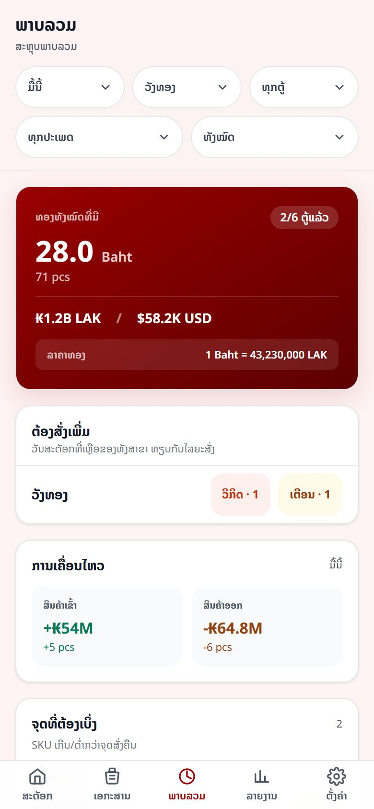
ພາບລວມ — ທອງທັງໝົດ, ຕ້ອງສັ່ງເພີ່ມ, ການເຄື່ອນໄຫວ 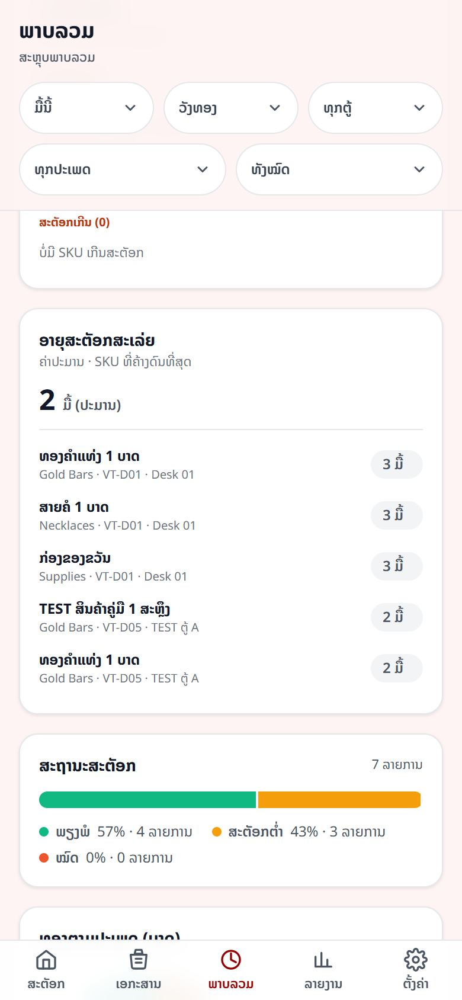
ອາຍຸສະຕັອກສະເລ່ຍ ແລະ ສະຖານະສະຕັອກ 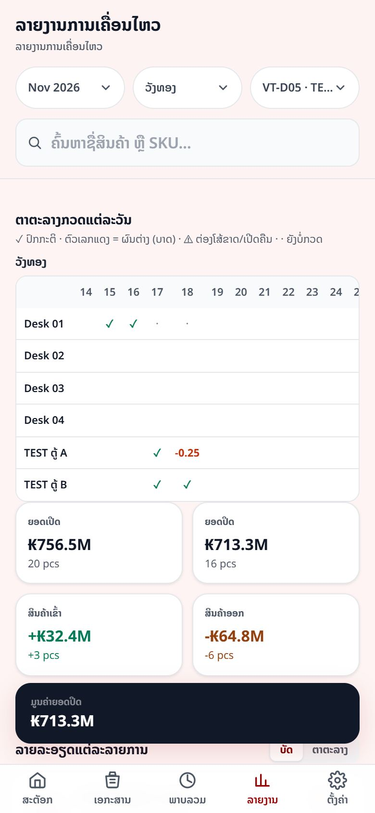
ລາຍງານ — ຕາຕະລາງກວດ ແລະ 4 ບັດຫຼັກ 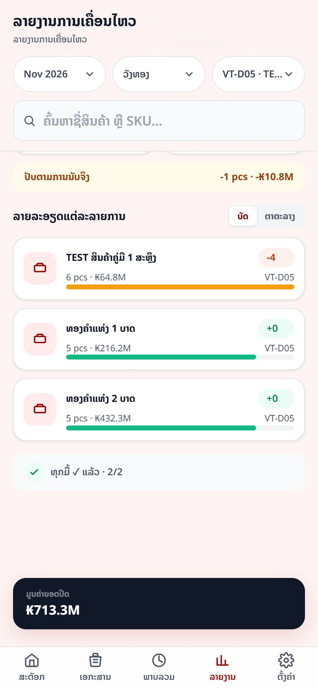
ປັບຕາມການນັບຈິງ ແລະ ລາຍລະອຽດແຕ່ລະລາຍການ 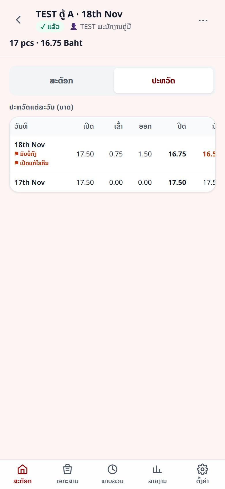
ປະຫວັດຂອງຕູ້ — ທຸງ ນັບບໍ່ກົງ / ເປີດແກ້ໄຂຄືນ 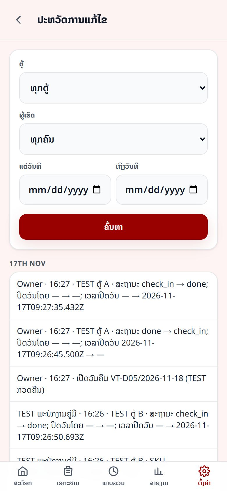
ປະຫວັດການແກ້ໄຂ
📄 ເອກະສານ ແລະ ຂໍ້ສະເໜີສັ່ງຊື້
+ ເອກະສານໃໝ່ — ໃບຮັບ/ສົ່ງທອງ: ຫົວຂໍ້, ສາຂາ, ຕູ້, ວັນທີ ແລະ ລາຍການ (ຈຳນວນ, ນ້ຳໜັກ G, ໝາຍເຫດ)ຂໍ້ສະເໜີສັ່ງຊື້ໃໝ່ — ເລືອກ ສາຂາ ແລະ ຕູ້: ລະບົບດຶງທຸກລາຍການພ້ອມ ຍອດຄົງ ແລະ ເນັ້ນສີ ລາຍການທີ່ຕ່ຳກວ່າຈຸດສັ່ງຊື້. ໃສ່ຈຳນວນ ແລ້ວກົດ ບັນທຶກ ແລະ ພິມຂໍ້ສະເໜີ ກົດ ພິມ / PDF ໃນບັດເອກະສານ. ລຶບເອກະສານໄດ້ສະເພາະແອດມິນ
1 ພົບສະຕັອກຕ່ຳ ປ້າຍ ເຕືອນ / ວິກິດ ໃນໜ້າຕູ້ ຫຼື ພາບລວມ → ຕ້ອງສັ່ງເພີ່ມ
→
2 ຂໍ້ສະເໜີສັ່ງຊື້ໃໝ່ ເມນູ ເອກະສານ → ເລືອກ ສາຂາ ແລະ ຕູ້
→
3 ໃສ່ຈຳນວນ ລາຍການທີ່ຕ້ອງສັ່ງ ຖືກເນັ້ນສີໄວ້ແລ້ວ
→
4 ບັນທຶກ ແລະ ພິມ ສົ່ງໃຫ້ເຈົ້າຂອງ/ແອດມິນ ອະນຸມັດ
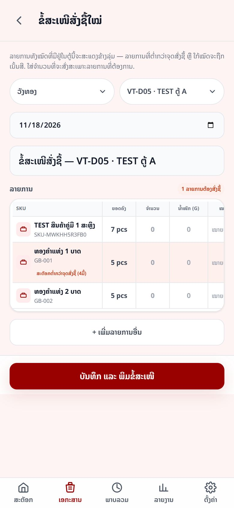
ຂໍ້ສະເໜີສັ່ງຊື້ — ທອງຄຳແທ່ງ 1 ບາດ ຖືກເນັ້ນສີ
🗓 ວຽກປະຈຳ ຕາມລະດັບຜູ້ໃຊ້
ພະນັກງານ / ຜູ້ຈັດການສາຂາ
ຕອນເຊົ້າ — ເປີດຮ້ານ
ເຂົ້າສູ່ລະບົບ ດ້ວຍຊື່ຜູ້ໃຊ້ຂອງຕົນເອງ
ກົດ ເຂົ້າວຽກ ທຸກຕູ້ທີ່ຮັບຜິດຊອບ
ກວດ ຍອດເປີດ ທຽບກັບຂອງຈິງ
ເບິ່ງບັດ ຄ້າງກວດ — ປິດມື້ທີ່ຄ້າງກ່ອນ
ລະຫວ່າງມື້
ບັນທຶກ ເຂົ້າ / ຂາຍ / ຕັດສະຕັອກ ທັນທີ
ຍ້າຍ: ໃສ່ທັງ − ຕູ້ສົ່ງ ແລະ + ຕູ້ຮັບ
ເບິ່ງປ້າຍ ເຕືອນ / ວິກິດ ໃນໜ້າຕູ້
ສ້າງເອກະສານ ທຸກຄັ້ງທີ່ຮັບ/ສົ່ງທອງ
ຕອນແລງ — ຫຼັງ 15:30
ກົດ ເລີ່ມນັບ , ນັບຂອງຈິງທຸກແຖວ
ຕ່າງ ≠ 0 → ໃສ່ໝາຍເຫດ
ໃສ່ ບັນທຶກນຳເງິນເຂົ້າຕູ້ເຊຟ (⋯)
ກົດ ✓ ປິດມື້
ສ້າງ ຂໍ້ສະເໜີສັ່ງຊື້ ຖ້າສະຕັອກຕ່ຳ
ອອກຈາກລະບົບ
ຜູ້ຈັດການສາຂາ: ກວດທຸກຕູ້ ✓ ແລ້ວ ກ່ອນກັບ, ເປີດມື້ຄືນເມື່ອມີຂໍ້ຜິດພາດ, ປົດລັອກບັນຊີພະນັກງານ.
ເຈົ້າຂອງ / ແອດມິນ
ປະຈຳວັນ
ພາບລວມ: "x/y ຕູ້ແລ້ວ" ແລະ ຕ້ອງສັ່ງເພີ່ມ
ກວດ ແລະ ອະນຸມັດ ຂໍ້ສະເໜີສັ່ງຊື້
ເບິ່ງຄຳເຕືອນ ການຍ້າຍບໍ່ເທົ່າ 0
ປະຈຳອາທິດ
ລາຍງານ: ຕາຕະລາງກວດ — ຕົວເລກແດງ ແລະ ⚠
ກວດໝາຍເຫດ ນັບບໍ່ກົງ ແລະ ຕັດສະຕັອກ
ປະຫວັດການແກ້ໄຂ: ການເປີດມື້ຄືນ
ປະຈຳເດືອນ
ກວດ ຂາຍສະເລ່ຍ/ມື້ ແລະ ໄລຍະສັ່ງ
ເພີ່ມ / ປິດໃຊ້ງານ SKU
ກວດບັນຊີຜູ້ໃຊ້ — ໃໝ່ / ລາອອກ
⚠️ ແກ້ບັນຫາ ແລະ ຂໍ້ຄວນລະວັງ
ປິດມື້ແລ້ວ ແຕ່ບັນທຶກຜິດ
ມື້ທີ່ ✓ ແລ້ວ ຖືກລັອກ. ແຈ້ງຜູ້ຈັດການສາຂາ ຫຼື ແອດມິນ ໃຫ້ ເປີດມື້ນີ້ຄືນ (ພາຍໃນ 3 ມື້, ສະເພາະມື້ຫຼ້າສຸດ), ແກ້ໄຂ ແລ້ວປິດມື້ອີກຄັ້ງ.
ເຂົ້າວຽກບໍ່ໄດ້ / ບັດຂຶ້ນ "ຄ້າງກວດ"
ມື້ກ່ອນຂອງຕູ້ນັ້ນ ຍັງບໍ່ໄດ້ປິດ. ເປີດມື້ນັ້ນ (ເລືອກວັນທີດ້ານເທິງ), ນັບ ແລະ ກົດ ✓ ປິດມື້ ກ່ອນ.
ລະບົບຖາມ "ຍັງບໍ່ທັນ 15:30 — ແນ່ໃຈບໍ່?"
ເວລາປິດປົກກະຕິ ແມ່ນຫຼັງ 15:30. ຖ້າຍັງມີການຂາຍ ໃຫ້ຍົກເລີກ ແລ້ວລໍຖ້າ.
ປິດມື້ບໍ່ໄດ້ — ແຖວຂຶ້ນສີແດງ
ຂາດ ຈຳນວນນັບ, ໝາຍເຫດຂອງ ຕ່າງ ຫຼື ເຫດຜົນ ຕັດສະຕັອກ . ກົດຂໍ້ຄວາມສີແດງໃຕ້ແຖວ ແລ້ວໃສ່ໃຫ້ຄົບ.
ພາບລວມ ເຕືອນ ການຍ້າຍບໍ່ເທົ່າ 0
ມີຕູ້ໜຶ່ງໃສ່ ຍ້າຍ ແຕ່ອີກຕູ້ບໍ່ໃສ່. ກວດທັງສອງຕູ້ ແລະ ໃສ່ຝ່າຍທີ່ຂາດ.
ແກ້ໄຂ SKU / ລຶບເອກະສານ / ເລືອກສາຂາອື່ນ ບໍ່ໄດ້
ສິດເຫຼົ່ານີ້ເປັນຂອງແອດມິນ. ພະນັກງານ ແລະ ຜູ້ຈັດການ ເຫັນສະເພາະສາຂາຂອງຕົນ — ແຈ້ງແອດມິນ.
ລະບົບໃຫ້ເຂົ້າສູ່ລະບົບໃໝ່
ລະຫັດຜ່ານຖືກປ່ຽນ, ບັນຊີຖືກປິດ ຫຼື ເຂົ້າສູ່ລະບົບດົນເກີນ 30 ມື້.
ຈື່ໄວ້ 3 ຂໍ້: ① ບັນທຶກທັນທີ ບໍ່ລໍຖ້າທ້າຍມື້ ② ນັບຂອງຈິງທຸກແລງ ກ່ອນ ✓ ປິດມື້ ③ ອອກຈາກລະບົບ ທຸກຄັ້ງທີ່ປ່ຽນຄົນໃຊ້
KPV ສະຕັອກ — ຄູ່ມືນຳໃຊ້ · 17/11/2026